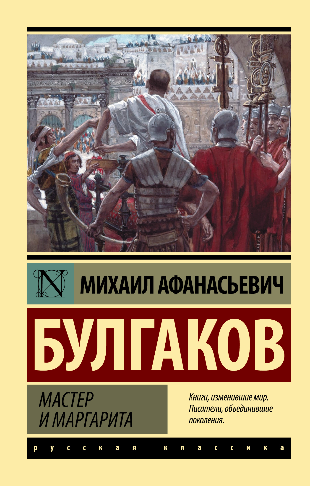

Мастер и Маргарита
Описание
Новое издание одного из самых культовых романов XX века — от автора легендарных произведений «Собачье сердце» и «Белая гвардия» Михаила Булгакова. «Мастер и Маргарита» — один из самых известных и значимых романов прошлого столетия. Книга легла в основу многочисленных опер, симфоний, рок-опер, фильмов и телесериалов. Самая свежая адаптация этой истории — посвящённая взаимоотношениям Воланда и Мастера картина «Воланд» — увидит свет 1 января 2023 года. Так что же так привлекает людей к истории о визите дьявола и его свиты в советскую Москву тридцатых годов прошлого века, истории о нищем философе и обречённом прокураторе Иудеи, о талантливом и несчастном Мастере и его прекрасной и верной возлюбленной Маргарите?
Характеристики
- Год выпуска: 2023
- Автор: Булгаков Михаил Афанасьевич
- Жанр: фантастика
- Язык: русский
- Возрастное ограничение: 12+